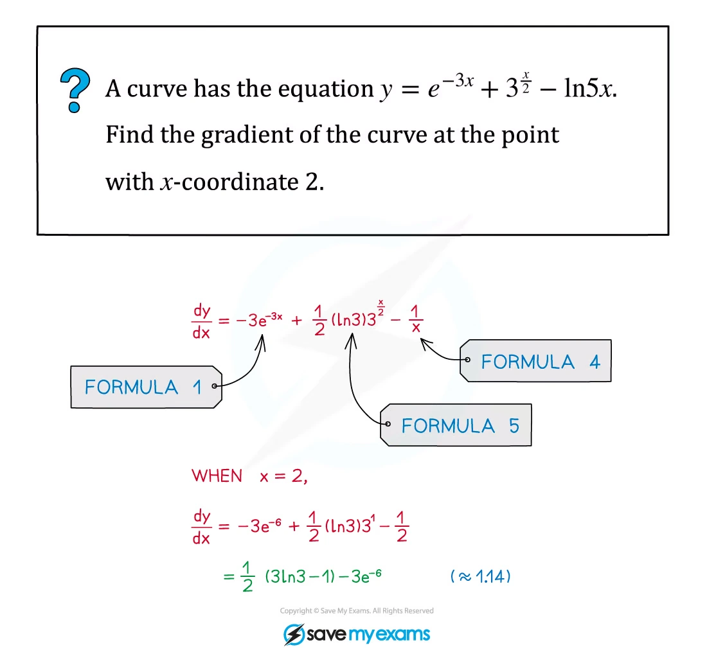
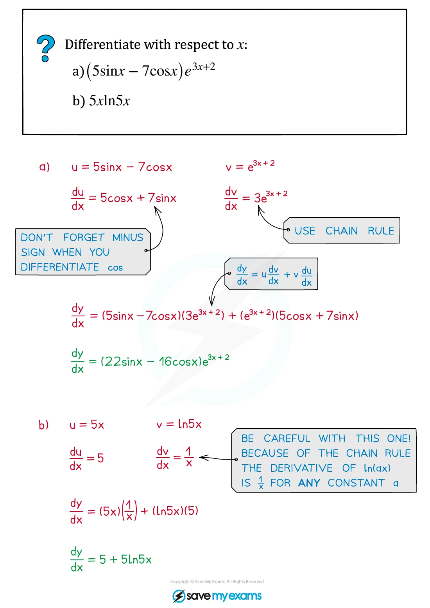
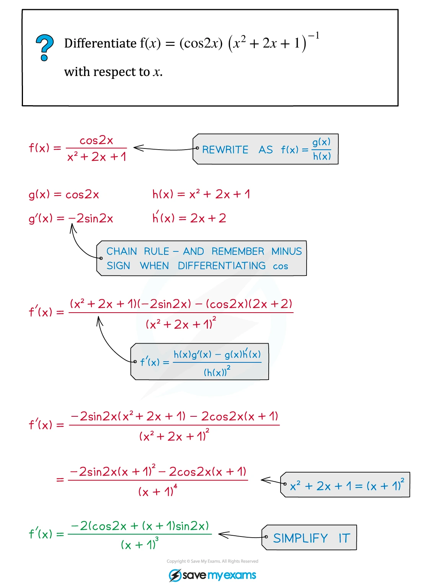
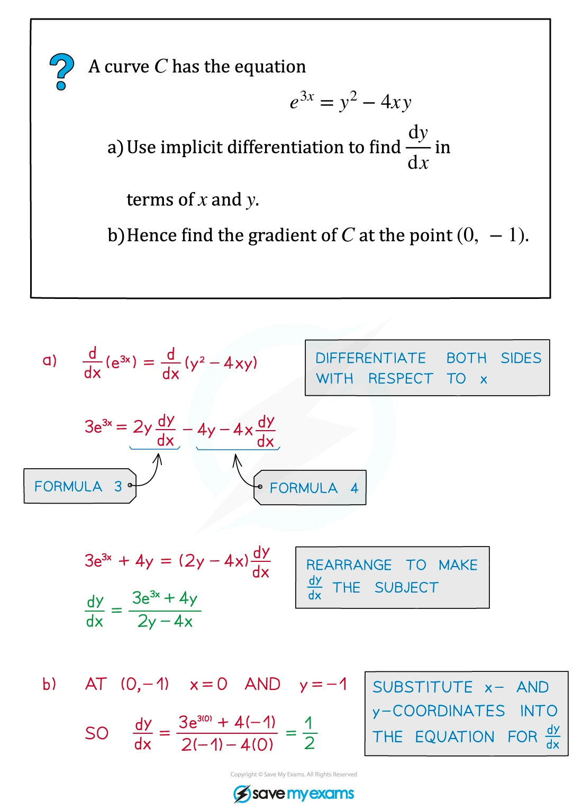
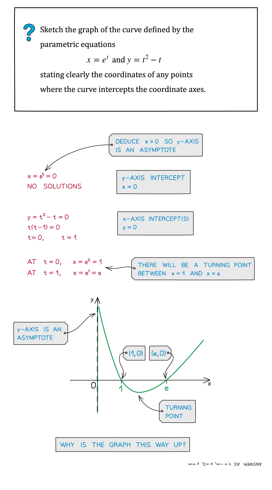
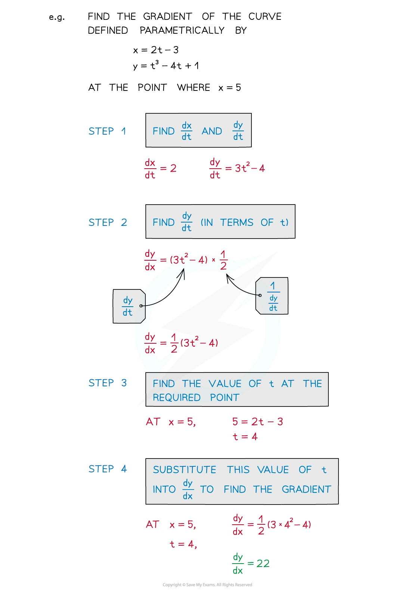
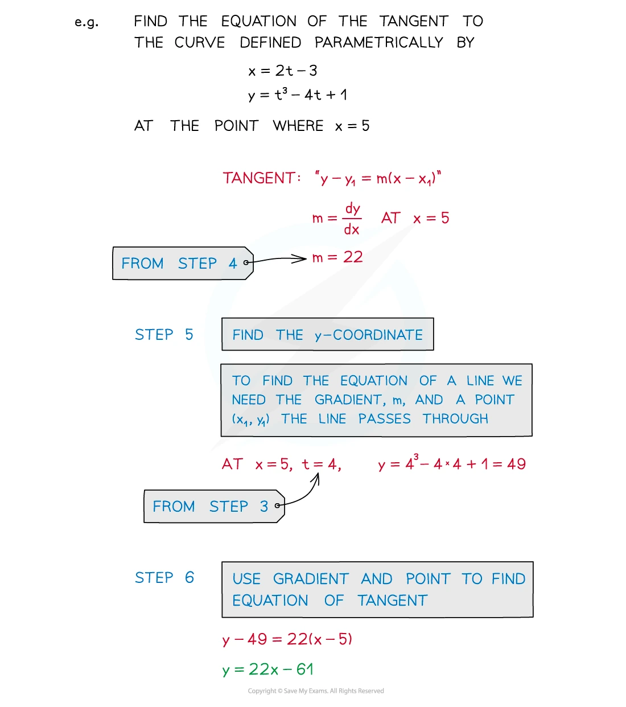
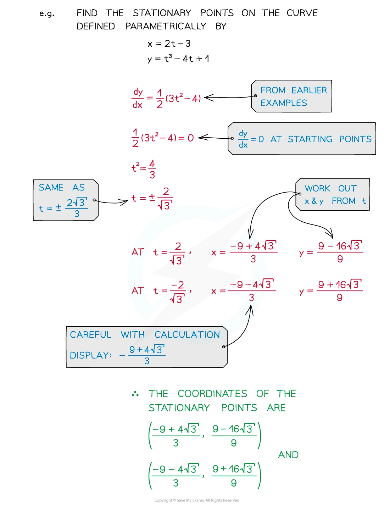

2.4 Differentiation
Basic derivatives · product and quotient rules · tangents · implicit and parametric differentiation
本页依据 9709 Mathematics 2026–2027 syllabus 2.4：使用 e^x、\ln x、\sin x、\cos x、\tan x 的 derivatives，以及 constant multiples、sums、differences 和 composites；使用 product rule 与 quotient rule；求并使用 parametric 或 implicit function 的 first derivative，包括 tangent、normal 和 stationary-point problems。
工作区没有独立的 Paper 2 note PDF，因此 worked examples 使用同一套 Differentiation note PDF 中已经独立提取的原始图片；每个例题单独成卡。真题全部来自本地 Paper 2 原始 PDF，题干只把 PDF 排版规范为 LaTeX，没有改写或编造题目。
1. Core knowledge
Standard derivatives and composites
\begin{aligned} \frac{d}{dx}(e^x)&=e^x, & \frac{d}{dx}(e^{ax+b})&=ae^{ax+b},\\ \frac{d}{dx}(\ln x)&=\frac1x, & \frac{d}{dx}[\ln(g(x))]&=\frac{g'(x)}{g(x)},\\ \frac{d}{dx}(\sin x)&=\cos x, & \frac{d}{dx}(\cos x)&=-\sin x,\\ \frac{d}{dx}(\tan x)&=\sec^2x. \end{aligned}
Chain rule 的核心是：先对 outer function 求导，再乘上 inner function 的 derivative。
Worked example · Differentiation note p.5

Product rule and quotient rule
若 y=u(x)v(x)，则
\frac{dy}{dx}=u\frac{dv}{dx}+v\frac{du}{dx}.
若 y=\dfrac{u(x)}{v(x)}，则
\frac{dy}{dx}=\frac{v\,du/dx-u\,dv/dx}{v^2}.
能先 simplify 时先 simplify；否则清楚写出 numerator、denominator 和各自的 derivative。
Worked example · Differentiation note p.8

Worked example · Differentiation note p.12

Tangents, normals and stationary points
在 (x_1,y_1) 处，若 tangent gradient 是 m，则
y-y_1=m(x-x_1).
若 tangent gradient 非零，normal gradient 是 -1/m。Stationary point 满足
\frac{dy}{dx}=0,
但还必须确认该点在 curve 的 domain 内，并代回原函数求对应的 y。
Worked example · Differentiation note p.17

Parametric differentiation
若 x=x(t)、y=y(t)，则
\frac{dy}{dx}=\frac{dy/dt}{dx/dt}, \qquad dx/dt\ne0.
Parametric stationary point 要求 dy/dt=0 且 dx/dt\ne0；求 tangent 或 normal 时，先在同一个 t 值上分别求 dx/dt 和 dy/dt。
Worked example · Differentiation note p.31

Worked example · Differentiation note p.35

Worked example · Differentiation note p.36

Worked example · Differentiation note p.37

2. Verified Paper 2 past-paper questions
以下 10 组题均已在本地 Paper 2 原始 PDF 及对应 mark scheme 中核对；题目没有因为数量不足而补造。表达式、区间和题目要求均保留原题信息。
Question 1 · 9709/21/M/J/20 Q3
A curve has parametric equations
x=e^t-2e^{-t},\qquad y=3e^{2t}+1.
Find the equation of the tangent to the curve at the point for which t=0. [5]
Show detailed mark scheme answer
Differentiate with respect to t:
\frac{dx}{dt}=e^t+2e^{-t}, \qquad \frac{dy}{dt}=6e^{2t}.
At t=0,
x=1-2=-1,\qquad y=3+1=4,
and
\frac{dy}{dx}=\frac{dy/dt}{dx/dt}=\frac6{1+2}=2.
The tangent through (-1,4) is therefore
y-4=2(x+1),
so
\boxed{y=2x+6}.PastPaper/2020/2020/9709-s20-qp-21.pdf, Q3, and matching mark scheme.
Question 2 · 9709/22/M/J/20 Q2
Find the exact coordinates of the stationary point on the curve with equation
y=5xe^{\frac12x}.
[5]
Show detailed mark scheme answer
Use the product rule:
\frac{dy}{dx}=5e^{x/2}+5x\left(\frac12e^{x/2}\right) =5e^{x/2}\left(1+\frac{x}{2}\right).
At a stationary point, dy/dx=0. Since e^{x/2}\ne0,
1+\frac{x}{2}=0 \quad\Longrightarrow\quad x=-2.
Substitute into the curve:
y=5(-2)e^{-1}=-\frac{10}{e}.
Hence the exact coordinates are
\boxed{\left(-2,-\frac{10}{e}\right)}.PastPaper/2020/2020/9709-s20-qp-22.pdf, Q2, and matching mark scheme.
Question 3 · 9709/22/F/M/21 Q3
The parametric equations of a curve are
x=e^{2t}\cos4t,\qquad y=3\sin2t.
Find the gradient of the curve at the point for which t=0. [5]
Show detailed mark scheme answer
Differentiate x by the product rule:
\frac{dx}{dt}=2e^{2t}\cos4t-4e^{2t}\sin4t.
Also,
\frac{dy}{dt}=6\cos2t.
At t=0,
\frac{dx}{dt}=2,qquad \frac{dy}{dt}=6.
Therefore
\boxed{\frac{dy}{dx}=\frac{6}{2}=3}.PastPaper/2021/2021/9709_m21_qp_22.pdf, Q3, and matching mark scheme.
Question 4 · 9709/21/M/J/21 Q4(a–b)
A curve has parametric equations
x=\ln(2t+6)-\ln t,\qquad y=t\ln t.
Find the value of t at the point P on the curve for which x=\ln4.
Find the exact gradient of the curve at P. [3+5]
Show detailed mark scheme answer
- Combine the logarithms:
x=\ln\left(\frac{2t+6}{t}\right).
At P,
\ln\left(\frac{2t+6}{t}\right)=\ln4 \quad\Longrightarrow\quad \frac{2t+6}{t}=4.
Thus 2t+6=4t, giving
\boxed{t=3}.
- Differentiate with respect to t:
\frac{dx}{dt}=\frac2{2t+6}-\frac1t, \qquad \frac{dy}{dt}=\ln t+1.
At t=3,
\frac{dx}{dt}=\frac16-\frac13=-\frac16, \qquad \frac{dy}{dt}=\ln3+1.
Hence
\boxed{\frac{dy}{dx}=\frac{\ln3+1}{-1/6}=-6(\ln3+1)}.PastPaper/2021/2021/9709_s21_qp_21.pdf, Q4(a–b), and matching mark scheme.
Question 5 · 9709/22/F/M/22 Q2
A curve has equation
y=7+4\ln(2x+5).
Find the equation of the tangent to the curve at the point (-2,7), giving your answer in the form y=mx+c. [5]
Show detailed mark scheme answer
Differentiate using the chain rule:
\frac{dy}{dx}=4\cdot\frac2{2x+5}=\frac8{2x+5}.
At x=-2,
m=\frac8{2(-2)+5}=8.
The tangent through (-2,7) is
y-7=8(x+2).
Therefore
\boxed{y=8x+23}.PastPaper/2022/2022/9709_m22_qp_22.pdf, Q2, and matching mark scheme.
Question 6 · 9709/21/M/J/22 Q4
A curve has equation
x^2y+2y^3=48.
Find the equation of the normal to the curve at the point (4,2), giving your answer in the form ax+by+c=0 where a, b and c are integers. [7]
Show detailed mark scheme answer
Differentiate implicitly:
\frac{d}{dx}(x^2y)+\frac{d}{dx}(2y^3)=0,
so
2xy+x^2\frac{dy}{dx}+6y^2\frac{dy}{dx}=0.
Collect the terms containing dy/dx:
\frac{dy}{dx}=-\frac{2xy}{x^2+6y^2}.
At (4,2),
\frac{dy}{dx}=-\frac{2(4)(2)}{4^2+6(2^2)} =-\frac{16}{40}=-\frac25.
Therefore the normal gradient is the negative reciprocal,
m_{\text{normal}}=\frac52.
The normal through (4,2) is
y-2=\frac52(x-4).
Multiplying by 2 and rearranging gives
\boxed{5x-2y-16=0}.PastPaper/2022/2022/9709_s22_qp_21.pdf, Q4, and matching mark scheme.
Question 7 · 9709/22/O/N/21 Q3
The curve with equation
y=5x-2\tan2x
has exactly one stationary point in the interval 0\le x<\frac14\pi.
Find the coordinates of this stationary point, giving each coordinate correct to 3 significant figures. [6]
Show detailed mark scheme answer
Differentiate:
\frac{dy}{dx}=5-4\sec^2 2x.
At a stationary point,
5-4\sec^2 2x=0 \quad\Longrightarrow\quad \sec^2 2x=\frac54 \quad\Longrightarrow\quad \cos^2 2x=\frac45.
Because 0\le x<\pi/4, we have 0\le2x<\pi/2 and \cos2x>0. Hence
\cos2x=\frac2{\sqrt5}, \qquad x=\frac12\cos^{-1}\left(\frac2{\sqrt5}\right) =0.231823\ldots.
At this angle, \sin2x=1/\sqrt5, so \tan2x=1/2. Therefore
y=5x-2\left(\frac12\right)=5x-1=0.159119\ldots.
Thus, to 3 significant figures,
\boxed{(x,y)=(0.232,\ 0.159)}.PastPaper/2021/2021/9709_w21_qp_22.pdf, Q3, and matching mark scheme.
Question 8 · 9709/21/O/N/20 Q7(a–c)
A curve is defined by the parametric equations
x=3t-2\sin t,\qquad y=5t+4\cos t,
where 0\le t\le2\pi. At each of the points P and Q on the curve, the gradient of the curve is \frac52.
- Show that the values of t at P and Q satisfy the equation
10\cos t-8\sin t=5.
Express 10\cos t-8\sin t in the form R\cos(t+\alpha), where R>0 and 0<\alpha<\frac12\pi. Give the exact value of R and the value of \alpha correct to 3 significant figures.
Hence find the values of t at the points P and Q. [3+3+4]
Show detailed mark scheme answer
- Differentiate:
\frac{dx}{dt}=3-2\cos t, \qquad \frac{dy}{dt}=5-4\sin t.
Use dy/dx=5/2:
\frac{5-4\sin t}{3-2\cos t}=\frac52.
Cross-multiplication gives
10-8\sin t=15-10\cos t \quad\Longrightarrow\quad \boxed{10\cos t-8\sin t=5}.
- Let
10\cos t-8\sin t=R\cos(t+\alpha) =R\cos t\cos\alpha-R\sin t\sin\alpha.
Comparing coefficients,
R\cos\alpha=10,\qquad R\sin\alpha=8.
Thus
R=\sqrt{10^2+8^2}=\boxed{2\sqrt{41}},
and
\tan\alpha=\frac8{10}=\frac45 \quad\Longrightarrow\quad \boxed{\alpha=0.675\text{ rad}}
to 3 significant figures.
- From (b),
2\sqrt{41}\cos(t+\alpha)=5.
Let \phi=\cos^{-1}\left(\dfrac5{2\sqrt{41}}\right). For 0\le t\le2\pi,
t=\phi-\alpha=0.494952\ldots
or
t=2\pi-\phi-\alpha=4.438751\ldots.
Hence
\boxed{t=0.495\text{ or }4.44}.PastPaper/2020/2020/9709_w20_qp_21.pdf, Q7(a–c), and matching mark scheme.
Question 9 · 9709/21/O/N/20 Q8(a)
A curve has equation y=f(x) where
f(x)=\frac{4x^3+8x-4}{2x-1}.
Find an expression for dy/dx and hence find the coordinates of each of the stationary points of the curve y=f(x). [5]
Show detailed mark scheme answer
Use the quotient rule:
\frac{dy}{dx} =\frac{(2x-1)(12x^2+8)-2(4x^3+8x-4)}{(2x-1)^2}.
Simplify the numerator:
\begin{aligned} &(2x-1)(12x^2+8)-2(4x^3+8x-4)\\ &=16x^3-12x^2 =4x^2(4x-3). \end{aligned}
Therefore
\frac{dy}{dx}=\frac{4x^2(4x-3)}{(2x-1)^2}.
For stationary points, set the numerator equal to zero:
x=0\quad\text{or}\quad x=\frac34.
Substitution into the original curve gives
f(0)=4, \qquad f\left(\frac34\right)=\frac{59}{8}.
Thus the stationary points are
\boxed{(0,4)\text{ and }\left(\frac34,\frac{59}{8}\right)}.PastPaper/2020/2020/9709_w20_qp_21.pdf, Q8(a), and matching mark scheme.
Question 10 · 9709/22/F/M/22 Q7(a–b)
A curve has equation
e^{2x}y-e^y=100.
- Show that
\frac{dy}{dx}=\frac{2e^{2x}y}{e^y-e^{2x}}.
- Show that the curve has no stationary points. [3+2]
Show detailed mark scheme answer
- Differentiate implicitly:
\frac{d}{dx}(e^{2x}y)-\frac{d}{dx}(e^y)=0.
Using the product rule and chain rule,
e^{2x}\left(2y+\frac{dy}{dx}\right)-e^y\frac{dy}{dx}=0.
Rearrange:
2e^{2x}y+e^{2x}\frac{dy}{dx}-e^y\frac{dy}{dx}=0,
so
\frac{dy}{dx}(e^y-e^{2x})=2e^{2x}y.
Therefore
\boxed{\frac{dy}{dx}=\frac{2e^{2x}y}{e^y-e^{2x}}}.
- A stationary point would require dy/dx=0. The denominator cannot make the derivative zero, so the numerator would have to be zero:
2e^{2x}y=0.
Since e^{2x}>0, this would require y=0. But substituting y=0 into the original curve gives
e^{2x}(0)-e^0=-1\ne100.
Thus y cannot be zero on the curve, and the curve has
\boxed{\text{no stationary points}}.PastPaper/2022/2022/9709_m22_qp_22.pdf, Q7(a–b), and matching mark scheme.
3. 2024 Paper 2 additions
以下题目来自新增的 2024 Paper 2 原始 PDF，并已与对应 mark scheme 核对。
Question 11 · 9709/21/M/J/24 Q1
A curve has equation
y=2\tan x-5\sin x
for 0\le x<\frac12\pi.
Find the x-coordinate of the stationary point of the curve. Give your answer correct to 3 significant figures. [3]
Show detailed mark scheme answer
Differentiate:
\frac{dy}{dx}=2\sec^2x-5\cos x.
At the stationary point,
2\sec^2x-5\cos x=0 \quad\Longrightarrow\quad \frac2{\cos^2x}=5\cos x.
Thus \cos^3x=2/5. On the given interval \cos x>0, so
x=\cos^{-1}\left(\left(\frac25\right)^{1/3}\right) =0.742461\ldots.
Therefore
\boxed{x=0.742}\qquad\text{(3 s.f.)}.PastPaper/2024/2024/qp-202406-mathematics-p21.pdf, Q1, and matching mark scheme.
Question 12 · 9709/22/M/J/24 Q4
A curve is defined by the parametric equations
x=4\cos^2t,\qquad y=\sqrt3\sin2t,
for values of t such that 0<t<\frac12\pi.
Find the equation of the normal to the curve at the point for which t=\frac16\pi. Give your answer in the form ax+by+c=0 where a, b and c are integers. [7]
Show detailed mark scheme answer
Differentiate with respect to t:
\frac{dx}{dt}=-8\cos t\sin t=-4\sin2t, \qquad \frac{dy}{dt}=2\sqrt3\cos2t.
At t=\pi/6,
x=4\cos^2\frac\pi6=3, \qquad y=\sqrt3\sin\frac\pi3=\frac32.
Also,
\frac{dy}{dx}=\frac{2\sqrt3\cos(\pi/3)}{-4\sin(\pi/3)}=-\frac12.
Therefore the normal gradient is 2. The normal through (3,3/2) is
y-\frac32=2(x-3).
Multiplying by 2 and rearranging gives
\boxed{4x-2y-9=0}.PastPaper/2024/2024/qp-202406-mathematics-p22.pdf, Q4, and matching mark scheme.
Question 13 · 9709/22/O/N/24 Q3
A curve has equation
6e^{-x}y^2+e^{2x}-12y+7=0.
Find the gradient of the curve at the point (\ln3,2). [6]
Show detailed mark scheme answer
Differentiate implicitly. For the first term use the product rule:
\frac{d}{dx}(6e^{-x}y^2)=-6e^{-x}y^2+12e^{-x}y\frac{dy}{dx}.
Thus
-6e^{-x}y^2+12e^{-x}y\frac{dy}{dx}+2e^{2x}-12\frac{dy}{dx}=0.
Collect the derivative terms:
\frac{dy}{dx}(12e^{-x}y-12)=6e^{-x}y^2-2e^{2x}.
At x=\ln3 and y=2,
e^{-x}=\frac13,\qquad e^{2x}=9.
Therefore
\frac{dy}{dx}=\frac{6(1/3)(2^2)-2(9)}{12(1/3)(2)-12} =\frac{8-18}{8-12} =\boxed{\frac52}.PastPaper/2024/2024/qp-202410-mathematics-p22.pdf, Q3, and matching mark scheme.